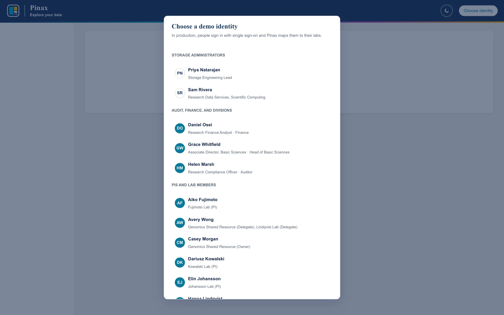
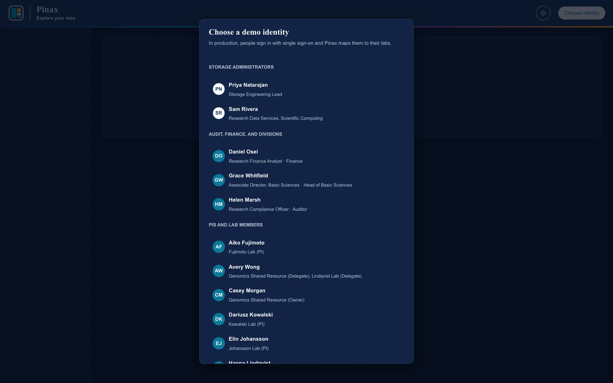
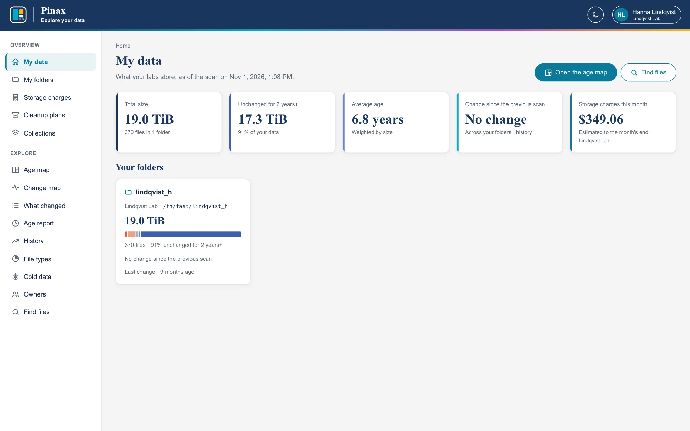
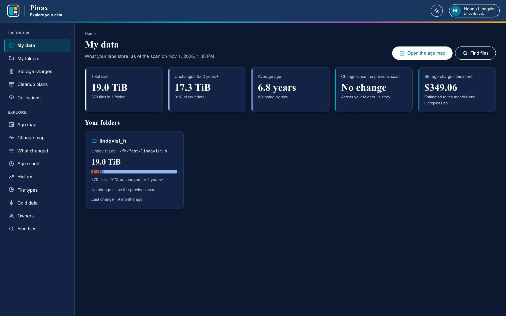

Signing in and My data
For PIs, lab managers, lab members, and division heads: what your labs store, as of the latest scan.
For the people whose data Pinax reports on: PIs, lab managers, and lab members; for division heads, who read their division's labs; and for storage administrators when they explore. It goes through every page a lab sees, in the order most people use them. The pictures are of the demo, whose labs and people are fictional. The ideas behind the pages (scans, top-level folders, ages, cold data) are in How Pinax sees storage.
Pinax only reports: it never opens, moves, or deletes a file. What it shows is as of the latest scan of each filesystem, usually taken weekly, so a file written today appears after the next scan.
Signing in and My data
How you sign in depends on your site: through your organization's single sign-on, or with a username and a password that Pinax keeps (a temporary one the first time, which you then change). In the demo, you choose who to be.


My data is the home page. It shows what your labs store, as of the latest scan:
- Total size, the files and folders, and how much has not changed for two years or more.
- Average age, weighted by size, so a large old file counts for more than many small new ones.
- Change since the previous scan, across your folders; click it for their history.
- Storage charges this month, an estimate to the month's end, where your site charges for storage.
- Your folders: each top-level folder your labs own, on every filesystem, with its size, a bar of its data by age (red for recent, blue for old), how much is unchanged for two years or more, and when it last changed.


You see the folders your labs own and everything inside them, and nothing else: other labs' folders do not appear at all. A delegate for two labs sees both. If a folder is missing, ask your storage administrators: it may not be mapped to your lab yet. A division head sees the folders of their division's labs the same way, to read. Storage administrators and auditors see every filesystem and folder; their home page is All data (Administration). Finance sees every lab's charges, and lands on Chargeback (Site roles).
Every page has the reports for the folder you are in along its top (Age map, Change map, What changed, Age report, History, File types, Cold data, Owners, Find files), and the scan it shows beside the date. The moon in the top bar switches between light and dark themes.